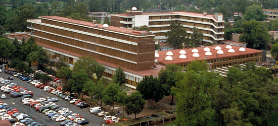
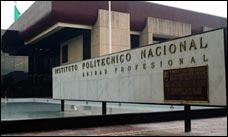

Se muestra informacion
Se muestran Informacion
Se muestra informacion
Carlos René Paderes Luna
4°H
cbtis 16
La ingeniería mecatrónica es una disciplina que une la ingeniería mecánica, ingeniería electrónica, ingeniería de control e ingeniería informática, y sirve para diseñar y desarrollar productos que involucren sistemas de control para el diseño de productos o procesos inteligentes, lo cual busca crear maquinaria más compleja para facilitar las actividades del ser humano a través de procesos electrónicos en la industria mecánica, principalmente. Debido a que combina varias ingenierías en una sola, su punto fuerte es la versatilidad
Desde su primera sede en el Instituto Tecnológico en 1948 hasta hoy, a 59 años de la fundación de la Escuela de Arquitectura llevada a cabo por el Arquitecto Ignacio Díaz Morales,el Centro Universitario de Arte, Arquitectura y Diseño ha pasado por grandes momentos que le dan año con año experiencia respaldada en todos los sentidos,desde sus Maestros fundadores como Horst Hartung Franz, Silvio Alberti, Bruno Cadore, y Erick Coufal, evolucionó su programa educativo hasta su actual sistema Departamental como Centro Temático Universitario; su enseñanza, está comprometida con las necesidades de la realidad social que actualmente se vive y que se inserta en el ámbito laboral contemporáneo.
Por la orientación integral de su programa, que contempla el desarrollo de competencias de clase internacional y la posibilidad de obtener un doble título con validez en la Unión Europea. Plan de estudios que integra lo último en las áreas de estudio de la arquitectura: institucional, teórico humanista, tecnología y construcción, comunicación gráfica y diseño arquitectónico sustentable. Carrera acreditada por la Acreditadora Nacional de Programas de Arquitectura y Disciplinas del Espacio Habitable�(ANPADEH) Visión global, ya que el programa de UVM se enfoca en el análisis de temas internacionales. 
Centros y laboratorios especializados, para poner en práctica los conocimientos que aprendes en la teoría. Doble título en Arquitectura�otorgado�por la Universidad Europea (la universidad privada más grande de España), tras completar las materias correspondientes en Madrid. Tu título será reconocido en cualquier país de la Unión Europea.* Para elevar tus niveles de competencia, puedes acceder al: ?�Certificado Global Business Concentration,�otorgado por Walden University -una de las mejores universidades online en el mundo-, con el que desarrollarás las competencias necesarias para tu desarrollo profesional y emprendedor*. Serás capaz de comunicarte de forma fluida en inglés, ya que lo aprenderás con el método desarrollado por nuestros socios: Cambridge University Press, ESOL Examinations and Bell Education Trust.
Los estudiantes que ingresen a la ESCOM deberán contar con las siguientes habilidades derivadas del perfil de egreso del nivel medio superior:
La ingeniería en sistemas computacionales es un modo de enfoque interdisciplinario que permite estudiar y comprender la realidad, con el propósito de implementar u optimizar sistemas informáticos complejos. Puede verse como la aplicación tecnológica de la teoría de sistemas a los esfuerzos de la ingeniería, adoptando en todo este trabajo el paradigma sistémico. La ingeniería en sistemas integra otras disciplinas y grupos de especialidad en un esfuerzo de equipo formando un proceso de desarrollo estructurado. Una de las principales diferencias de la ingeniería en sistemas computacionales respecto a otras disciplinas de ingeniería tradicionales, consiste en que la Ingeniería en Sistemas Computacionales no construye productos tangibles. Mientras que los ingenieros civiles podrían diseñar edificios o puentes, los ingenieros electrónicos podrían diseñar circuitos, los ingenieros en sistemas tratan con sistemas abstractos con ayuda de las metodologías de la ciencia de sistemas tecnológicos, y confían además en otras disciplinas para diseñar y entregar los productos tangibles que son la realización de esos sistemas. Sin olvidar que el gran diseño estructurado de esta ingeniería nos da un enfoque para el desarrollo de la Inteligencia artificial (IA) siendo una ingeniería avanzada proveniente de las Ciencias de la Computación.
Vocación para el arte, manejo del solfeo que le permita leer a primera vista. Fundamentos básicos de armonía, análisis, conjuntos de cámara y vocales; conceptos básicos tales como: género, forma, estructura, frase, motivo, cadencia, periodo, estilo, entre otros. Lengua extranjera, preferentemente inglés.
Adquisición de conocimientos, habilidades y valores en torno a: Historia de la Música, desde la Antigüedad Clásica hasta nuestros días, dominio de las exigencias técnicas propias del instrumento de su elección, formación de ensambles de cámara y de música popular, aplicación de la tecnología musical.
Docencia en todos los niveles educativos, arreglos musicales para grupos instrumentales y vocales de manera individual, puede ejercer como ejecutante del propio instrumento, ofreciendo conciertos o audiciones. Como músico de estudio en sesiones de grabación. Desarrollo de actividades dentro del campo de la investigación.
Créditos mínimos y máximos para la obtención del título: 261 / 350
Horas mínimas y máximas para la obtención del título: 4948 / 5188
Benemérita Universidad Autónoma de Puebla, Campus: Puebla